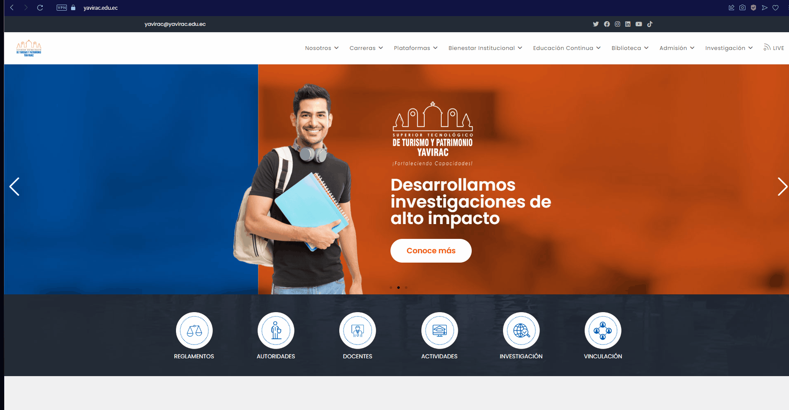
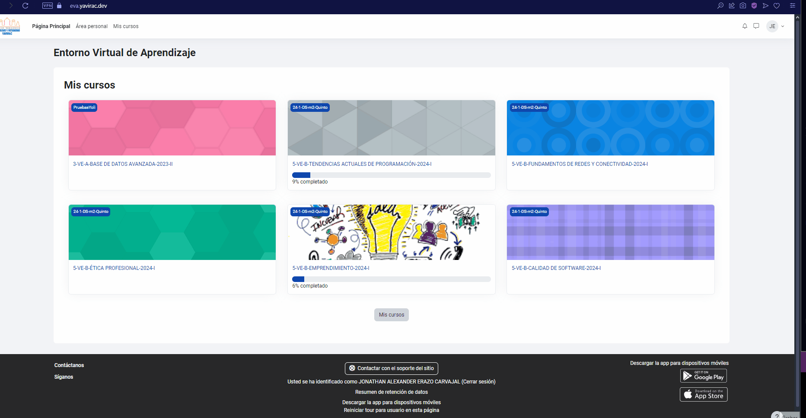
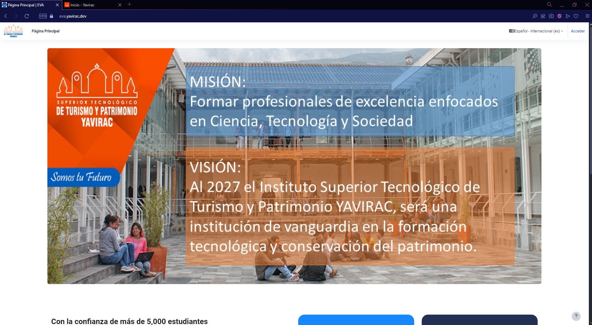
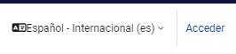
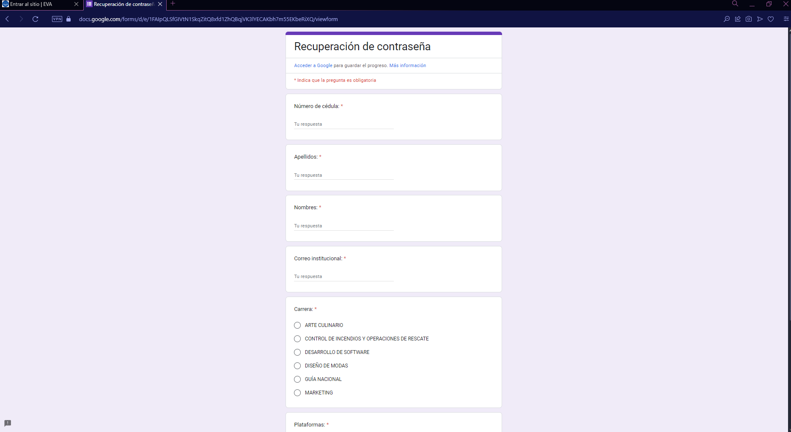
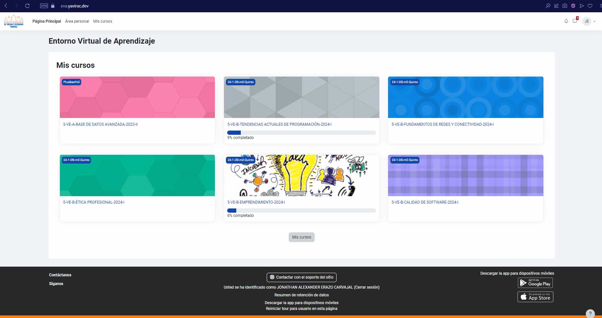
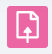
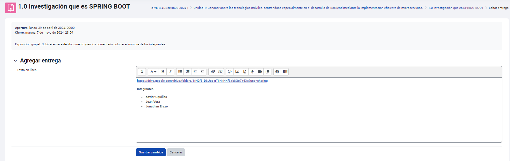
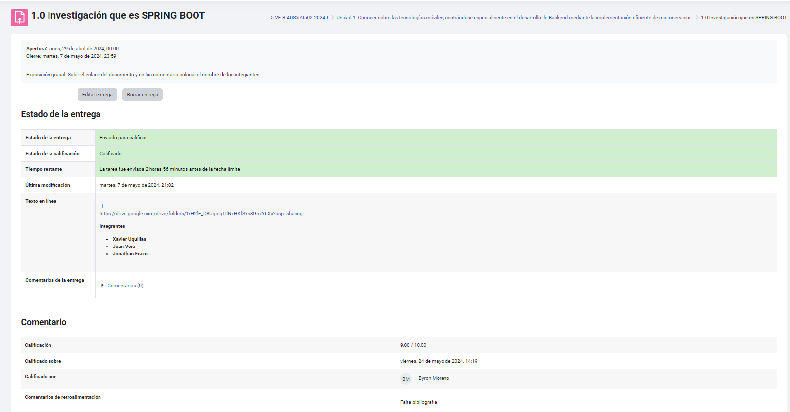

📘 Guía de Uso del Entorno Virtual de Aprendizaje (EVA) en Moodle para Estudiantes
¡Bienvenidos a la Guía de Uso del Entorno Virtual de Aprendizaje (EVA)! Esta guía está pensada para estudiantes que desean aprovechar al máximo las herramientas y funcionalidades de Moodle. A continuación, encontrarás instrucciones detalladas para explorar cada sección, realizar actividades, y comunicarte de manera efectiva en el EVA.
📌 ¿Qué encontrarás en esta guía?
1. 🚪 Acceso a la Plataforma
Aprende a iniciar sesión en Moodle y a configurar tu perfil para una experiencia personalizada y segura.
2. 🧭 Navegación en Moodle
Descubre cómo desplazarte entre cursos, módulos y secciones, y familiarízate con la interfaz para una navegación sencilla y eficiente.
3. 📥 Acceso y Descarga de Materiales
Conoce cómo acceder, visualizar y descargar los recursos compartidos en cada curso: documentos, videos, enlaces, y más.
4. 📝 Participación en Actividades
Encuentra instrucciones paso a paso para completar actividades y evaluaciones, como cuestionarios, tareas y foros de discusión.
5. 📊 Seguimiento del Progreso y Calificaciones
Aprende a revisar tu progreso académico y verifica tus calificaciones y retroalimentación en cada curso.
6. 💬 Comunicación
Explora las opciones para interactuar con tus profesores y compañeros, desde el chat hasta los foros de discusión y mensajes privados.
7. ⏰ Cumplimiento de Plazos
Conoce las herramientas y buenas prácticas para cumplir con los plazos y gestionar tu tiempo de manera efectiva dentro de la plataforma.
8. 🌟 Buenas Prácticas
Descubre recomendaciones para sacar el máximo provecho de Moodle, asegurando una participación activa y respetuosa.
📝 Cómo usar esta guía:
Cada sección incluye ejemplos prácticos y consejos útiles. ¡Te recomendamos seguir el orden de los temas para una experiencia completa!
Recuerda: el EVA es una herramienta diseñada para mejorar tu experiencia de aprendizaje, permitiéndote acceder a todos los recursos y actividades necesarias para tu éxito académico.
¡Esperamos que esta guía te sea de gran ayuda para explorar y dominar el EVA en Moodle! 🚀
1. 🚪 Acceso a la Plataforma
Para comenzar a utilizar el Entorno Virtual de Aprendizaje (EVA), sigue estos pasos:
-
Cómo ingresar
-
Restablecimiento de contraseña
 -
Configuración del perfil

Cómo ingresar
Para acceder al Entorno Virtual de Aprendizaje (EVA), sigue estos pasos:
-
Dirígete a la URL: https://eva.yavirac.dev.
 -
Selecciona la opción "Acceder".
 -
Si es tu primera vez ingresando, introduce tu número de cédula tanto en el campo de usuario como en el de contraseña.
-
Una vez dentro, el sistema te pedirá que personalices tu contraseña para mayor seguridad. Sigue las instrucciones en pantalla para completar este proceso.
Restablecimiento de contraseña
Si necesitas restablecer tu contraseña, sigue estos pasos:
-
Dirígete a la página principal: https://yavirac.edu.ec/.

-
Selecciona la opción "Plataformas", lo que desplegará un menú con varias opciones.
-
En el menú desplegable, elige "Gestión de contraseñas".

-
Serás dirigido a un formulario donde podrás solicitar el reseteo de tu contraseña.

Completa el formulario con la información solicitada y sigue las instrucciones para finalizar el proceso de restablecimiento.
Configuración del perfil
En el Entorno Virtual de Aprendizaje (EVA), puedes personalizar tu perfil para una experiencia más ajustada a tus necesidades. En esta sección, puedes:
- Modificar tu foto de perfil: Cambia tu imagen de perfil para personalizar tu cuenta.
- Ajustar preferencias de notificaciones: Configura las notificaciones para recibir alertas sobre actividades, tareas y mensajes importantes.
- Actualizar datos personales: Edita tu información personal como nombre, correo electrónico, entre otros.
 Estas opciones te permiten tener un perfil personalizado y mantenerte al tanto de las actividades dentro del EVA.
Estas opciones te permiten tener un perfil personalizado y mantenerte al tanto de las actividades dentro del EVA.
2. 🧭 Navegación en Moodle
En esta sección aprenderás a navegar por la interfaz principal de Moodle y cómo acceder a los cursos disponibles. La plataforma está diseñada para ser intuitiva, permitiéndote encontrar fácilmente las herramientas y recursos que necesitas para tu aprendizaje.
Revisaremos los siguientes aspectos:
- Interfaz principal: Familiarízate con la disposición y los elementos clave de la página de inicio, como el menú de navegación, las notificaciones.
- Acceso a los cursos: Aprende cómo acceder a los cursos en los que estás inscrito, cómo visualizar los módulos y cómo explorar los recursos y actividades dentro de cada uno.
Con esta guía, podrás navegar de manera eficiente y aprovechar al máximo todas las funcionalidades de Moodle.
Interfaz principal
La interfaz principal de Moodle es el punto de partida para acceder a todas las herramientas y recursos necesarios en tu proceso de aprendizaje. Al ingresar, verás el tablero de control, que te permitirá gestionar y visualizar toda la información relevante sobre tus cursos. En esta sección, exploraremos los siguientes elementos clave:
-
Cursos: Visualiza todos los cursos en los que estás inscrito, accede a ellos con un solo clic y explora los módulos, actividades y materiales disponibles.

-
Actividades: Desde el area personal, podrás ver las actividades pendientes y programadas, lo que te permitirá estar al tanto de las tareas y evaluaciones. 
-
Notificaciones: Recibe alertas sobre anuncios importantes, cambios en los cursos, calificaciones y otros eventos clave relacionados con tu progreso académico.
Conocer y dominar la interfaz principal te ayudará a moverte con facilidad dentro de la plataforma y mantenerte organizado durante todo el proceso educativo.
Acceso a los cursos
Acceder a tus cursos matriculados en Moodle es fácil y rápido. Desde el tablero de control, podrás navegar entre todos los cursos en los que estás inscrito. Aquí te mostramos cómo:
-
Navegar entre cursos: En la interfaz principal, verás una lista de todos los cursos en los que estás matriculado. Simplemente haz clic en el curso de tu interés para acceder a su contenido.

-
Acceder al contenido: Dentro de cada curso, podrás explorar los materiales disponibles, como documentos, videos, presentaciones y otros recursos proporcionados por el instructor.

-
Encontrar tareas, actividades y materiales: En cada curso, se organizarán las tareas y actividades por módulos o semanas. De esta forma, podrás localizar fácilmente las evaluaciones, actividades prácticas, foros de discusión y otros materiales relacionados con el curso.

Dominar cómo navegar y acceder a los cursos te permitirá aprovechar al máximo tu experiencia de aprendizaje en Moodle.
3. 📥 Acceso y Descarga de Materiales
Guía para Acceso y Descarga de Materiales en EVA Yavirac
Dentro de EVA Yavirac, tus docentes pueden subir recursos educativos, como documentos, videos y enlaces externos. Aquí te mostramos cómo visualizar y descargar estos materiales.
Paso 1: Ver y Descargar Recursos
-
Una vez dentro de tu curso, dirígete a la sección correspondiente de Materiales o Recursos (el nombre puede variar según el curso).
-
En esta sección, verás una lista de archivos que pueden incluir documentos PDF, archivos de Word, presentaciones de PowerPoint, entre otros.

-
Para ver un archivo directamente en el navegador, haz clic sobre el nombre del archivo. Dependiendo del tipo de archivo y de la configuración del navegador, el archivo se abrirá en una nueva pestaña o directamente en la ventana actual.
-
Para descargar el archivo a tu dispositivo, haz clic derecho en el nombre del archivo y selecciona la opción Guardar enlace como... o Descargar.

Tip: Algunos archivos pueden descargarse automáticamente al hacer clic en ellos. Verifica en la carpeta de Descargas de tu dispositivo.
Paso 2: Acceso a Recursos Multimedia
-
En la misma sección de recursos, es común que encuentres enlaces a videos, audios o enlaces externos que los docentes hayan compartido.
-
Para acceder a un video o enlace multimedia:
- Haz clic sobre el enlace del video o del recurso multimedia.
- Si el enlace dirige a una plataforma de video (como YouTube), serás redirigido automáticamente a esa página o el video se abrirá en el mismo navegador.

-
Si deseas guardar el enlace para verlo más tarde, puedes hacer clic derecho en el enlace y seleccionar Copiar enlace. Luego, puedes guardarlo en tus notas o en cualquier archivo de texto.
Nota: Algunos videos y enlaces externos pueden requerir permisos adicionales o inicio de sesión en otras plataformas, según el acceso establecido por el docente.
Paso 3: Descargar Recursos Adicionales
- Algunos materiales pueden venir en formatos especiales (por ejemplo, archivos ZIP). Para descargarlos, sigue el mismo procedimiento de descarga y luego descomprime el archivo en tu dispositivo para acceder al contenido.
- Si tienes problemas para abrir algún tipo de archivo, verifica que tengas el software adecuado instalado (por ejemplo, Adobe Reader para PDF, Word para documentos .docx, etc.).
¡Con estos pasos podrás acceder a todos los materiales que tus docentes compartan en EVA Yavirac! Si tienes problemas para abrir o descargar un archivo, no dudes en contactar a soporte técnico.
Instituto Yavirac
EVA - Entorno Virtual de Aprendizaje
4.📝 Participación en actividades
Dentro de cada curso en Moodle, encontrarás diferentes tipos de actividades diseñadas para evaluar y promover tu aprendizaje. A continuación, te mostramos cómo identificar y participar en las actividades principales:
-
Tareas:
Las tareas se identifican con un ícono rosado y un símbolo de archivo.
-
Foros de discusión:
Los foros están marcados con un ícono naranja con un símbolo de comentario. -
Exámenes y cuestionarios:
Los exámenes se identifican con un ícono rosado y un símbolo de check.
Participar activamente en estas actividades te permitirá cumplir con los objetivos de cada curso y aprovechar al máximo tu experiencia de aprendizaje en Moodle.
Tareas
Las tareas se identifican con un ícono rosado y un símbolo de archivo. En cada tarea, podrás:
- Ver el estado de entrega, estado de calificación, tiempo restante, última modificación y comentarios.
- Utilizar el apartado "Agregar entrega" para subir tus archivos o completar la tarea. 
- Revisar y agregar comentarios relacionados con la tarea, facilitando la comunicación con el instructor.

Foros de discusión
Los foros están marcados con un ícono naranja con un símbolo de comentario. Aquí podrás:
- Crear nuevos temas de conversación relacionados con el título o tema del foro.
- Compartir tu punto de vista y opinar sobre otros comentarios realizados en el foro.
- Usar el botón "Suscribirse al foro" para recibir notificaciones sobre nuevos comentarios y respuestas.
Cuestionarios y Exámenes
Los exámenes se identifican con un ícono rosado y un símbolo de check. Estos pueden incluir preguntas de selección, selección múltiple, ensayo, verdadero/falso, entre otras. Los exámenes están diseñados para evaluar tus conocimientos de acuerdo a los temas tratados en el curso.
Seguimiento del Progreso y Calificaciones
Comunicación
Cumplimiento de Plazos
Buenas Practicas
📘 Guía de Uso del Entorno Virtual de Aprendizaje (EVA) en Moodle para Docentes
¡Bienvenidos a la Guía de Uso del Entorno Virtual de Aprendizaje (EVA) para docentes! Esta guía está diseñada para ayudar a los docentes a utilizar Moodle de manera efectiva, permitiéndoles gestionar sus cursos, materiales y estudiantes con facilidad. Encontrarás instrucciones detalladas sobre las herramientas y opciones más importantes de la plataforma.
📌 ¿Qué encontrarás en esta guía?
1. 🚪 Acceso a la Plataforma Moodle
- Cómo ingresar: Instrucciones paso a paso para acceder a Moodle (URL, usuario y contraseña inicial).
- Restablecimiento de contraseña: Proceso para recuperar el acceso en caso de olvido de la contraseña.
- Configuración del perfil de usuario: Pasos para actualizar tu información y preferencias de notificación.
2. 📚 Gestión de Cursos
- Creación y Configuración de Cursos: Cómo crear un curso y gestionar su contenido de manera accesible.
- Edición del Curso: Activación del modo de edición y adición de etiquetas, recursos y actividades.
- Organización del Contenido: Opciones de estructuración mediante temas o semanas para un curso bien organizado.
3. 📂 Carga de Materiales
- Subir Archivos: Cómo cargar y gestionar documentos, presentaciones y otros materiales de clase.
- Recursos Multimedia: Insertar enlaces a videos y otros recursos interactivos.
- Creación de Páginas y Carpetas: Organiza y agrupa los materiales para un acceso eficiente por parte de los estudiantes.
4. 📝 Gestión de Actividades
- Foros de Discusión: Creación de foros para fomentar la participación de los estudiantes.
- Tareas y Entregas: Configuración de tareas y revisión de trabajos enviados por los estudiantes.
- Cuestionarios: Creación de cuestionarios con preguntas de opción múltiple, verdadero/falso, ensayo, entre otros.
5. 📊 Evaluación y Retroalimentación
- Calificaciones: Uso del módulo de calificaciones para registrar y gestionar las notas.
- Retroalimentación: Cómo proporcionar comentarios detallados, escritos o en audio, sobre las actividades de los estudiantes.
6. 💬 Comunicación
- Mensajería Interna: Enviar mensajes directos a los estudiantes dentro de Moodle.
- Anuncios: Uso de la herramienta de anuncios para comunicar actualizaciones importantes a todo el curso.
7. 💾 Copia de Seguridad y Restauración
- Copia de Seguridad del Curso: Cómo realizar una copia de seguridad de los cursos para preservar la información.
- Restauración de Cursos Anteriores: Cómo importar y reutilizar contenido de cursos anteriores.
📝 Cómo usar esta guía:
Cada sección contiene ejemplos y consejos prácticos para maximizar la experiencia docente en Moodle. Te recomendamos seguir el orden de los temas para una comprensión completa de las funcionalidades.
Esta guía te ayudará a optimizar el uso del EVA y a gestionar tus cursos y estudiantes de manera eficiente. ¡Esperamos que sea de gran utilidad para mejorar tu experiencia docente en Moodle! 🚀
1. 🚪 Acceso a la Plataforma
Para comenzar a utilizar el Entorno Virtual de Aprendizaje (EVA), sigue estos pasos:
-
Cómo ingresar
-
Restablecimiento de contraseña
-
Configuración del perfil
Cómo ingresar
Para acceder al Entorno Virtual de Aprendizaje (EVA), sigue estos pasos:
-
Dirígete a la URL: https://eva.yavirac.dev.
-
Selecciona la opción "Acceder".
-
Si es tu primera vez ingresando, introduce tu número de cédula tanto en el campo de usuario como en el de contraseña.
-
Una vez dentro, el sistema te pedirá que personalices tu contraseña para mayor seguridad. Sigue las instrucciones en pantalla para completar este proceso.
Restablecimiento de contraseña
Si necesitas restablecer tu contraseña, sigue estos pasos:
-
Dirígete a la página principal: https://yavirac.edu.ec/.
-
Selecciona la opción "Plataformas", lo que desplegará un menú con varias opciones.
-
En el menú desplegable, elige "Gestión de contraseñas".
-
Serás dirigido a un formulario donde podrás solicitar el reseteo de tu contraseña.
Completa el formulario con la información solicitada y sigue las instrucciones para finalizar el proceso de restablecimiento.
Configuración del perfil
En el Entorno Virtual de Aprendizaje (EVA), puedes personalizar tu perfil para una experiencia más ajustada a tus necesidades. En esta sección, puedes:
- Modificar tu foto de perfil: Cambia tu imagen de perfil para personalizar tu cuenta.
- Ajustar preferencias de notificaciones: Configura las notificaciones para recibir alertas sobre actividades, tareas y mensajes importantes.
- Actualizar datos personales: Edita tu información personal como nombre, correo electrónico, entre otros.
Estas opciones te permiten tener un perfil personalizado y mantenerte al tanto de las actividades dentro del EVA.